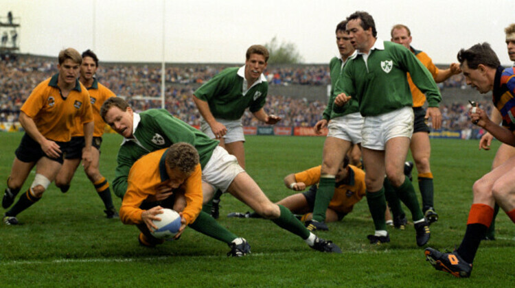

LES MEILLEURS MATCHS de rugby 1985/2005
Nouvelle-Zeland
Angleterre
Australie
France
Irlande
Afrique du Sud
Ecosse
Australie-France 1987
Ecosse-Angleterre 1990
Ireland-Australie 1991

Nouvelle Zelande-France 1994
Afrique du Sud-Nouvelle Zelande 1995
France-Nouvelle Zelande 1999
Australie-Nouvelle Zelande 2000
Australie-Angleterre 2003